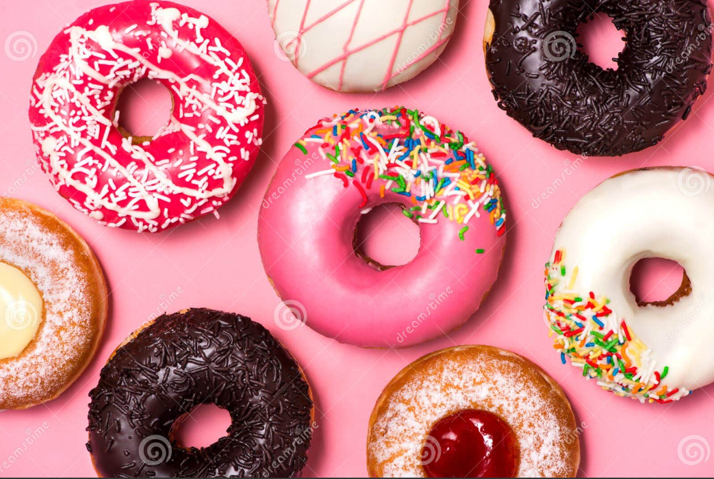

DONAS GLASEADAS PERFECTAS!
La receta más esponjosa y deliciosa que podrás preparar en casa
Las donas caseras son suaves, dulces y completamente irresistibles.

Ingredientes
- 2 tazas de harina
- 1/2 taza de azúcar
- 1 huevo
- 1/2 taza de leche
- 2 cucharadas de mantequilla
- 1 cucharadita de polvo para hornear
- Aceite para freír
Pasos de Preparación
- Mezclar ingredientes secos.
- Agregar huevo, leche y mantequilla.
- Amasar hasta integrar.
- Formar las donas.
- Freír hasta dorar.
- Decorar con glaseado.
Fuente:
RecetasGratis